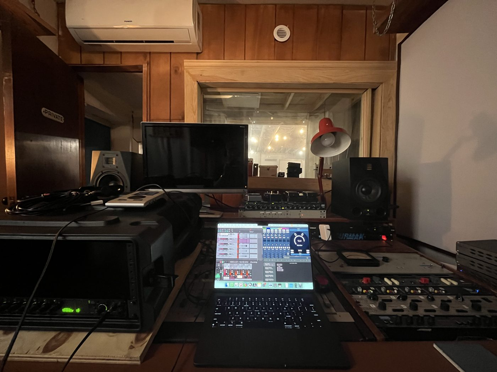
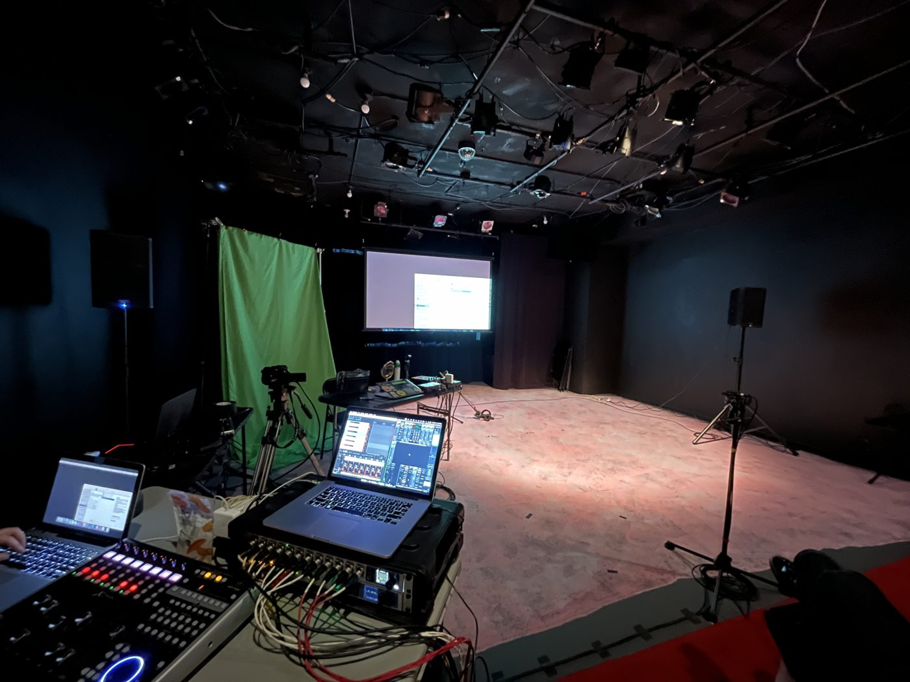
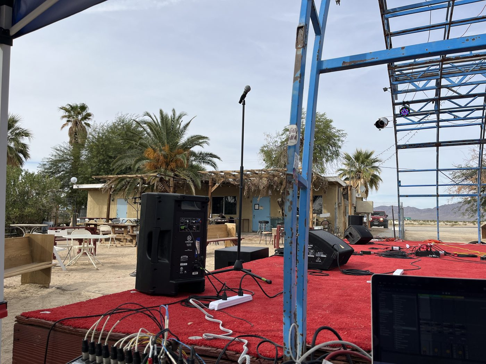
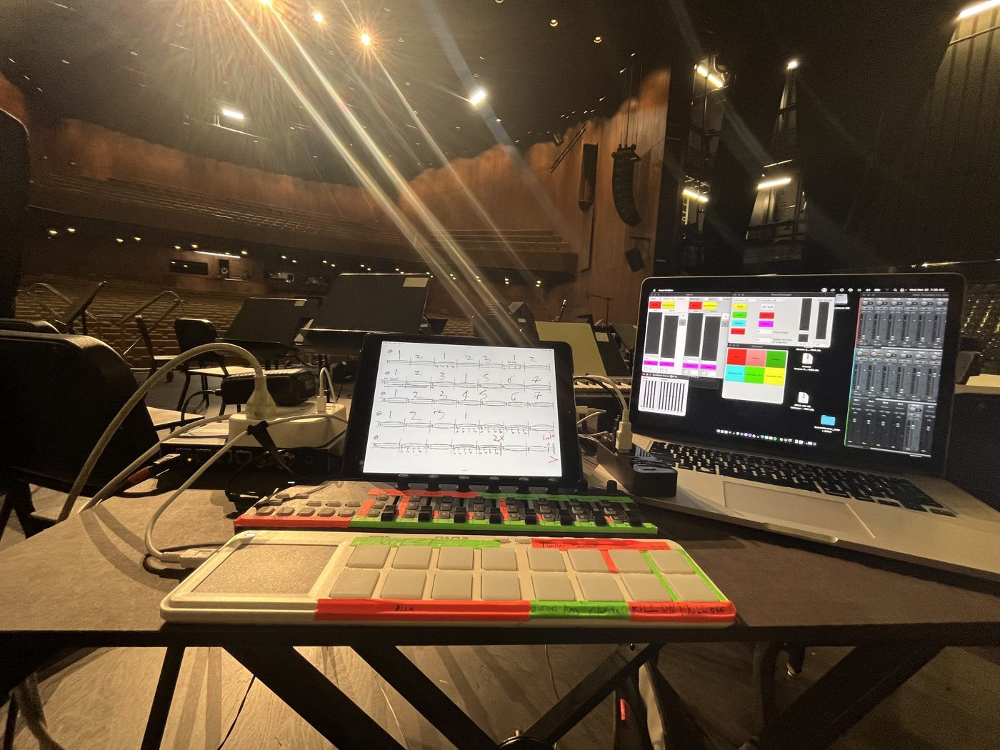
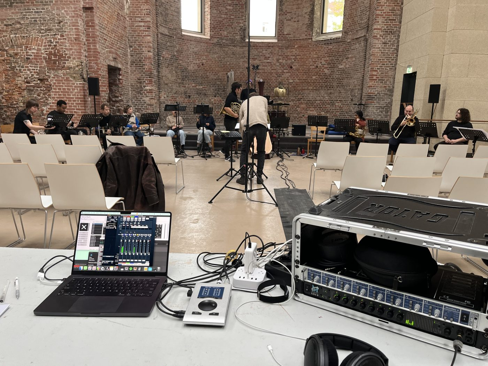

Recording, mixing, and mastering for new music, contemporary classical, jazz, improvised, experimental, and electronic music.
Based in Berlin and available throughout Germany, Europe, and the United States.
I have worked as a freelance audio engineer since 2014 and am Technical Director for
Ensemble Dal Niente. Previously, I was a recording and
live sound engineer at the Oberlin Conservatory of Music's Audio Services department and an Assistant Audio Engineer at the
Marlboro Music Festival. As a composer and computer musician myself, I am comfortable with complex contemporary scores,
non-traditional instrumentations, live electronics, and multichannel speaker setups.
I am also active as an interpreter and performer of live electronic and electroacoustic music, having performed with ensembles
such as Ensemble Dal Niente and EnsembleKollektiv, and I design custom software systems for live electronics and sound installation.
Ensembles and festivals I have worked with include Ensemble Dal Niente, EnsembleKollektiv, TAK Ensemble, Ensemble Apparat,
MaerzMusik, Big Ears, and Time Spans.
• I bring a portable high-end recording setup with up to 18 microphone inputs to your concert, rehearsal, church, or studio session.
• Recordings for concert documentation, commercial releases, auditions, competitions, and applications.
• My recording setup can also function as a mixing board, enabling me to provide live sound reinforcement and recording at the same time.
Editing, Mixing & Mastering
• Detailed editing for acoustic and electronic recordings.
• Mixing in stereo and for multichannel playback.
• Mastering for release or streaming.

Studio session with Ensemble Dal Niente at Bim Bom Studios.
Audio Restoration
• De-clipping, de-humming, de-noising, and de-clicking to recover damaged, compromised, and/or noisy recordings.
• I can also polish recordings that were recorded on less-than-ideal equipment such as phones or laptops.
Live Electronics & Live Sound
• Interpreting and performing the electronics part of a piece with your ensemble: Max/MSP, Pure Data, and SuperCollider patches, or DAW playback synchronized with a score.
• Amplification, playback, and sound system setup and tuning, including multichannel and ambisonic loudspeaker arrays.

Front-of-house and live electronics position with Ensemble Dal Niente at Aguijón Theater Company, Chicago.

Front-of-house at High Desert Soundings Festival, Joshua Tree (2023).
Custom Software & Systems
• Interactive performance software and installation systems in SuperCollider, Max/MSP, and Pure Data, built for your piece or project.
• Updating and repairing outdated or broken patches.
SuperCollider performance system for Michelle Lou's In a Forest: per-input routing and filters, spatial sample banks, live effects, and a preset manager where channel counts are set at runtime.
Composition for Dance & Film
• Original music and sound design for dance, film, and theatre, including multichannel and interactive work. See Derivatives for collaborative work with dance.
Lessons & Workshops
• Private lessons and workshops in music production, audio engineering, composition, theory, synthesis, and computer music programming (SuperCollider, Max/MSP, Pure Data).
• I am a tutor in the Electronic Music Production & Performance programme at the Catalyst Institute for Creative Arts and Technology in Berlin, and have taught electronic music at the Oberlin Conservatory and the University of Chicago.
Request a Quote
Email hunterbrownmusic1@gmail.com with a few details and I'll reply with a quote, usually within two working days:
• Date(s) and location
• Instrumentation and number of performers
• What you need (recording, editing, mixing, mastering, live sound, software, lessons)
• What the recording is for (release, documentation, application, etc.)
Applying for funding? I'm happy to provide a quote for your grant budget.
Selected Credits: Live Electronics & Technical Direction
• Bryan Eubanks & Koen Nutters, The Understated Songbook, KM28, Berlin (2026) — Live electronics
• Ensemble Dal Niente / Beyond This Point, Simon Steen-Andersen's Asthma, Run Time Error, and Black Box Music, Time Spans Festival, New York (2025) — Technical direction
• Max Murray with Ensemble Apparat, Schaufeln | Brayen — Rain (premiere), Kirche St. Elisabeth, Berlin (2025) — Live electronics
• Michelle Lou with EnsembleKollektiv, Teeth, MaerzMusik, Berlin (2024) — Software design, live electronics, multichannel diffusion
• Michelle Lou with TAK Ensemble, In a Forest, The Clemente, New York (2023) — Software design, live electronics, multichannel diffusion
• Ensemble Dal Niente, Simon Steen-Andersen's Black Box Music and Michelle Lou's to care for the bodies of the dead, Epiphany Center for the Arts, Chicago (2023) — Live electronics, technical direction
• Ensemble Dal Niente with Ken Vandermark, Big Ears Festival, Knoxville (2022) — Live electronics, front-of-house, location recording
• Ensemble Dal Niente, Carola Bauckholt's Oh I See, DePaul University, Chicago (2022) — Projection mapping
As Technical Director of Ensemble Dal Niente since 2021, I have performed or provided technical direction for works by Carola Bauckholt, Alican Çamcı,
Michelle Lou, Alvin Lucier, Nicole Mitchell, Sarah Nemtsov, Kaija Saariaho, and Simon Steen-Andersen, among others.

Live electronics setup for the premiere of Michelle Lou's Teeth with EnsembleKollektiv, MaerzMusik, Berlin (2024).

Playback, mixing, and recording position at the dress rehearsal of Max Murray's Schaufeln | Brayen — Rain, Kirche St. Elisabeth, Berlin.
Location Recording Equipment
Microphone Preamps & AD/DA Converters
• Metric Halo ULN-8 with ADAT Edge Card
• RME Octamic II
• RME Babyface Pro
Connected via ADAT: 18 microphone inputs, 4 line inputs, and 8 line outputs.
Microphones
• Sennheiser MKH 8040, cardioid (stereo pair)
• DPA 4091, omni (stereo pair)
• Austrian Audio CC8, cardioid (4x)
• AKG C414 XLS, multi-pattern (1x)
• Sennheiser MKH 30, figure-of-8 (stereo pair)
• Oktava MK-012, multi-pattern (stereo pair)
• AKG D112 MKII, cardioid kick drum mic (1x)
• Sennheiser e906, cardioid (1x)
Direct Input Boxes & Splitters
• Radial JDI Stereo DI, passive
• Radial ProD2 Stereo DI, passive
• Radial ProMS2 Mono Mic Splitter, passive
Stands & Cables
• Manfrotto 1004BAC, max height 3.66 m, suitable for orchestral, choir, and organ recording (1x)
• Manfrotto 5002BL Nano Plus, lightweight straight stand (2x)
• K&M 210/30, boom stand (7x)
• Millenium MS 2002, short boom stand (1x)
• Assorted XLR cables with Neutrik connectors (20x)
• Assorted TRS/TS cables with Neutrik connectors (8x)